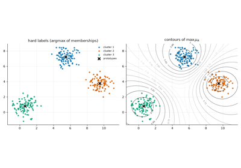
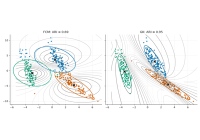
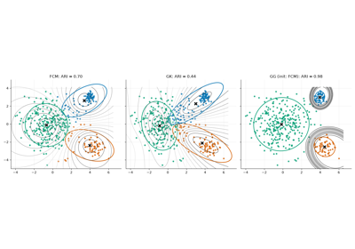
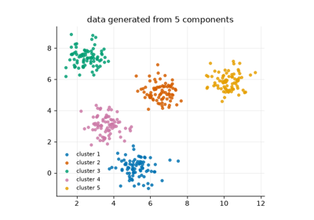
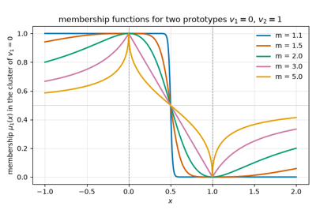
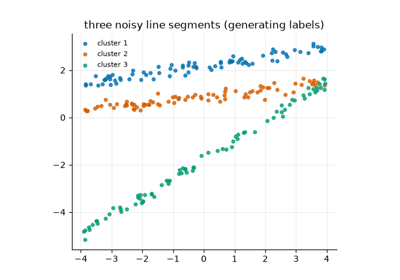
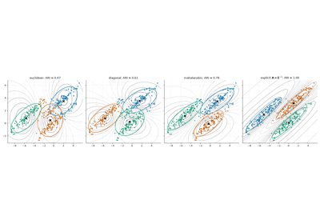
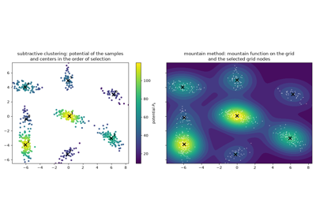
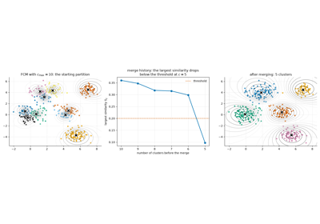

Clustering algorithms and validation#
Hard and fuzzy partitioning (k-means, k-medoids, FCM, GK, GG), evaluating new data, choosing the number of clusters and working with pandas / scikit-learn. Also: generalized fuzzifiers and deterministic annealing, subtractive and mountain clustering, compatible cluster merging and stability-based selection of the number of clusters.

Fuzzy c-means: memberships and the fuzziness exponent

Hard versus fuzzy partitions: k-means, k-medoids, and FCM

Gustafson–Kessel: clusters with their own shape

Gath–Geva: clusters of different size and density

Choosing the number of clusters with validity indices


Feature scaling on real data: the motorcycle data set

Working with pandas and scikit-learn: pipelines, DataFrames, and model selection

The fuzziness exponent m: from crisp cells to uniform memberships

Local optima and restarts: initializing Gustafson–Kessel on crossing lines

Distance norms: Euclidean, diagonal, and Mahalanobis fuzzy c-means

What makes a partition fuzzy: fuzzifiers, regularization, and annealing

Subtractive clustering: the number and location of clusters from density

Three routes to the number of clusters: merging, validity scan, and stability